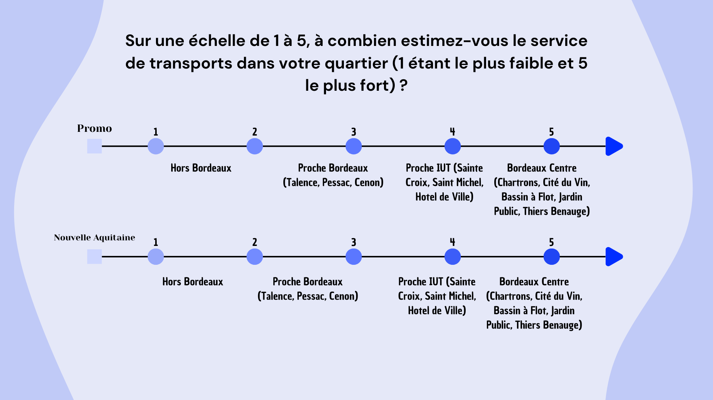

Student Housing in Bordeaux
During a data journalism assignment, we were asked to address a topic related to student life. As a result, I chose the following subject: "Student Housing in Bordeaux: Satisfaction Dependent on Location". During this project, I had to find open data so that my work would not be subject to copyright, create an infographic, and write an article.
Skills Developed :
- Research and analysis of open data : Identification and use of copyright-free data sources concerning student housing in Bordeaux, ensuring work not subject to copyright.
- Data processing and statistical analysis : Manipulation and interpretation of raw data to extract relevant information on the correlation between student satisfaction and housing location.
- Infographic design : Creation of a clear and impactful visual representation allowing effective communication of data analysis results.
- Journalistic writing : Development of a structured article presenting the survey results, contextualizing the data, and offering an in-depth analysis of the subject.
- Mastery of data visualization tools : Use of specialized software to transform complex data into visual representations accessible to the general public.
This project strengthened my data journalism skills, combining analytical rigor, visual creativity, and writing abilities to address a concrete issue affecting student life.
View or download the complete PDF by clicking on it.
